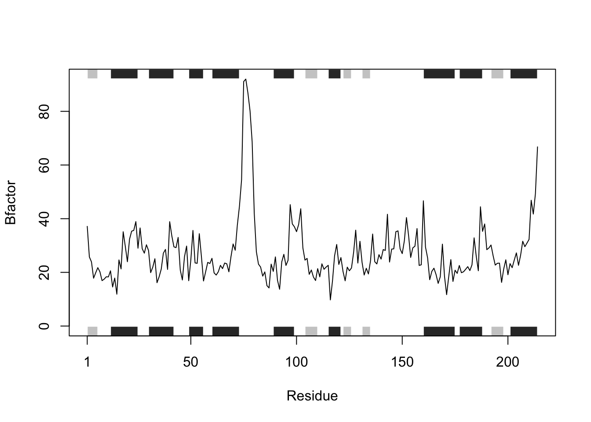
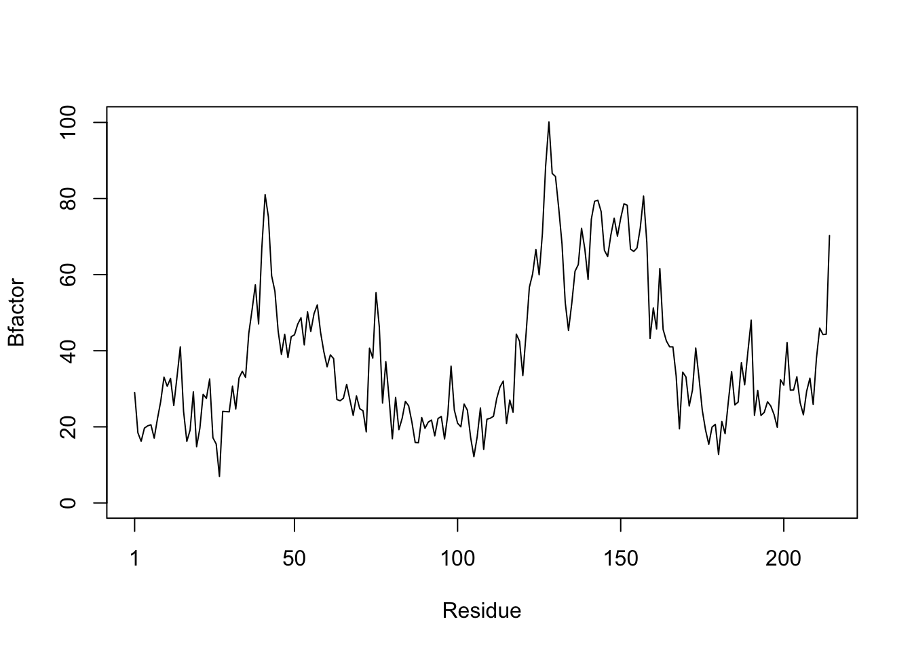
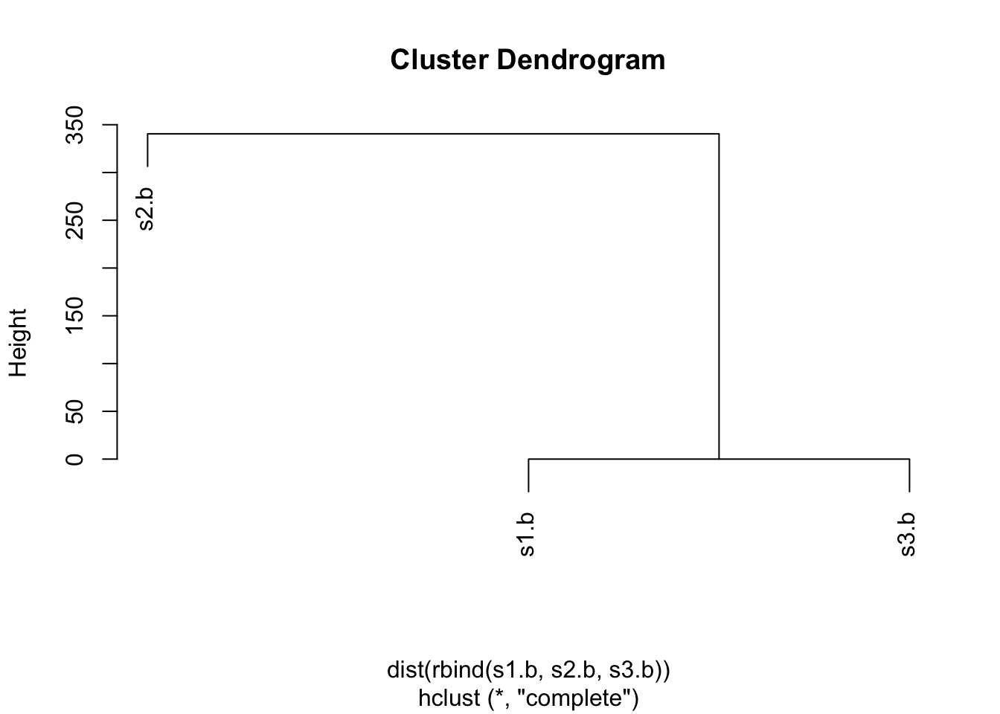
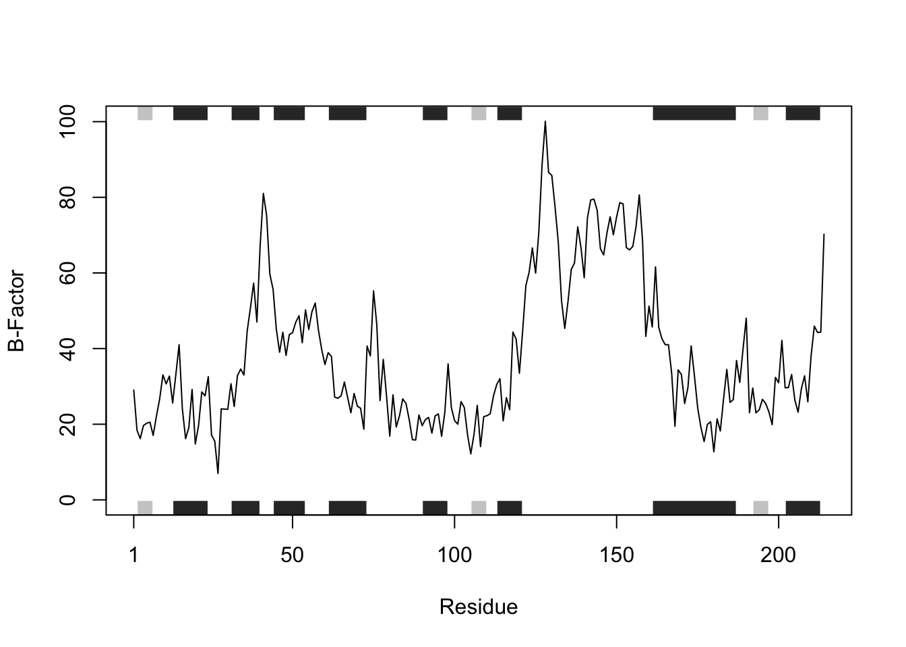

df <- data.frame(a=1:10, b=seq(200,400,length=10),c=11:20,d=NA)
df$a <- (df$a - min(df$a)) / (max(df$a) - min(df$a))
df$b <- (df$b - min(df$a)) / (max(df$b) - min(df$b))
df$c <- (df$c - min(df$c)) / (max(df$c) - min(df$c))
df$d <- (df$d - min(df$d)) / (max(df$a) - min(df$d)) HW6Quarto
Q. Can you improve this analysis code?
Ccheck what df$a returns before making function:
df$a [1] 0.0000000 0.1111111 0.2222222 0.3333333 0.4444444 0.5555556 0.6666667
[8] 0.7777778 0.8888889 1.0000000Make function:
function1 <- function(x) {
(x - min(x))/(max(x) - min(x))
}Check that function output is the same as original output:
function1(df$a) [1] 0.0000000 0.1111111 0.2222222 0.3333333 0.4444444 0.5555556 0.6666667
[8] 0.7777778 0.8888889 1.0000000Install bio3d.
#install.packages("bio3d")Q. Can you improve this analysis code?
library(bio3d)
s1 <- read.pdb("4AKE") # kinase with drug Note: Accessing on-line PDB files2 <- read.pdb("1AKE") # kinase no drug Note: Accessing on-line PDB file
PDB has ALT records, taking A only, rm.alt=TRUEs3 <- read.pdb("1E4Y") # kinase with drug Note: Accessing on-line PDB files1.chainA <- trim.pdb(s1, chain="A", elety="CA")
s2.chainA <- trim.pdb(s2, chain="A", elety="CA")
s3.chainA <- trim.pdb(s1, chain="A", elety="CA")
s1.b <- s1.chainA$atom$b
s2.b <- s2.chainA$atom$b
s3.b <- s3.chainA$atom$b
plotb3(s1.b, sse=s1.chainA, typ="l", ylab="Bfactor")
plotb3(s2.b, sse=s2.chainA, typ="l", ylab="Bfactor")
plotb3(s3.b, sse=s3.chainA, typ="l", ylab="Bfactor")
It gives an error message: “figure margins too large”.
I don’t know how to fix it:
?plotb3Still confused, but “rerun with debug” worked, not sure what it did but there is a plot now!
Q1. What type of object is returned from the read.pdb() function?
?read.pdb() This function gives us a PDB structure object that can be used as a dataframe.
Q2. What does the trim.pdb() function do?
?trim.pdb() This function produces a smaller subset of the original PDB object.
Q3. What input parameter would turn off the marginal black and grey rectangles in the plots and what do they represent in this case?
Either delete sse = s1.chainA or set inputs top and bot to FALSE. These rectangles represent secondary structure annotations.
plotb3(s1.b, sse=s1.chainA, typ="l", ylab="Bfactor", top = FALSE, bot = FALSE)
plotb3(s1.b, typ="l", ylab="Bfactor", top = FALSE, bot = FALSE)Q4. What would be a better plot to compare across the different proteins?
To compare, it would probably be best to either put all three lines on the same plot, or to put all three plots on the same figure.
Q5. Which proteins are more similar to each other in their B-factor trends. How could you quantify this? HINT: try the rbind(), dist() and hclust() functions together with a resulting dendrogram plot. Look up the documentation to see what each of these functions does.
hc <- hclust( dist( rbind(s1.b, s2.b, s3.b) ) )
plot(hc)
The dendrogram shows that s1 and s3 (both kinase with drug) are more similar to each other than they are to s2 (kinase no drug).
Q6. How would you generalize the original code above to work with any set of input protein structures?
Requirements:
- comments on what are the inputs to the function.
- what the function does and how to use it.
- what is the output of the function.
- function behaves as desired, producing the correct output and follows assignment specifications.
- the code is efficient meaning it uses best practices such as limiting calculation duplication.
- code is readable, meaning best practices are used including proper indentation and whitespace used, relevant variable names, and organized in a logical manner.
- function code and call executes and is working properly.
Original code:
library(bio3d)
s1 <- read.pdb("4AKE") # kinase with drug Note: Accessing on-line PDB fileWarning in get.pdb(file, path = tempdir(), verbose = FALSE):
/var/folders/18/22d7743143b17f6pmzh3z5000000gn/T//Rtmpg2Ymsa/4AKE.pdb exists.
Skipping downloads2 <- read.pdb("1AKE") # kinase no drug Note: Accessing on-line PDB fileWarning in get.pdb(file, path = tempdir(), verbose = FALSE):
/var/folders/18/22d7743143b17f6pmzh3z5000000gn/T//Rtmpg2Ymsa/1AKE.pdb exists.
Skipping download PDB has ALT records, taking A only, rm.alt=TRUEs3 <- read.pdb("1E4Y") # kinase with drug Note: Accessing on-line PDB fileWarning in get.pdb(file, path = tempdir(), verbose = FALSE):
/var/folders/18/22d7743143b17f6pmzh3z5000000gn/T//Rtmpg2Ymsa/1E4Y.pdb exists.
Skipping downloads1.chainA <- trim.pdb(s1, chain="A", elety="CA")
s2.chainA <- trim.pdb(s2, chain="A", elety="CA")
s3.chainA <- trim.pdb(s1, chain="A", elety="CA")
s1.b <- s1.chainA$atom$b
s2.b <- s2.chainA$atom$b
s3.b <- s3.chainA$atom$b
plotb3(s1.b, sse=s1.chainA, typ="l", ylab="Bfactor")
plotb3(s2.b, sse=s2.chainA, typ="l", ylab="Bfactor")
plotb3(s3.b, sse=s3.chainA, typ="l", ylab="Bfactor")
Inputs needed: - data input for read.pdb() needed - inputs for trim.pdb(): dataframe can be taken from from read.pdb(); chain and atom type for elety should be modifiable by user but with default options - sX.b calls the temperature factor b data, does not require an input - plotb3: typ describes the type of plot desired, so it does not require a modifiable input; ylab should also stay consistent; the data and secondary structure inputs are taken from what has already been done in the function, so no new inputs are needed
Therefore, the function needs 3 input arguments: the data to pull from, the chain the user wants to look at, and the atom type. The rest of the function should pull from existing data, and have set parameters so that the general plot does the same thing.
Output/what the function does: it should return a plot of a certain protein chain. The x axis should be the residue and the y should be “Bfactor”, which measures the “thermal fluctuation of an atom around its average position” and indicates “protein flexibility and dynamics” (Yang et al., 2025).
plot_bfactor <- function (x, y = "A", z = "CA") {
library(bio3d)
dataframeprot <- read.pdb(x)
protchain <- trim.pdb(dataframeprot, chain = y, elety = z)
tempfact <- protchain$atom$b
plotb3(tempfact, sse = protchain, typ = "l", ylab = "B-Factor")
}Now let’s try it out & make sure it works by inputting the dataframe, chain, and atom type from the original s1 plot. We can also try leaving out the chain and atom type inputs, since they already match our default inputs.
plot_bfactor("4AKE", "A", "CA") Note: Accessing on-line PDB fileWarning in get.pdb(file, path = tempdir(), verbose = FALSE):
/var/folders/18/22d7743143b17f6pmzh3z5000000gn/T//Rtmpg2Ymsa/4AKE.pdb exists.
Skipping download
plot_bfactor("4AKE") Note: Accessing on-line PDB fileWarning in get.pdb(file, path = tempdir(), verbose = FALSE):
/var/folders/18/22d7743143b17f6pmzh3z5000000gn/T//Rtmpg2Ymsa/4AKE.pdb exists.
Skipping download
This is the same plot we got with the original code, so the function works! :)
Citations:
Yang, Yulu et al. “OPUS-BFactor: Predicting Protein B-Factor with Sequence and Structure Information.” Molecules (Basel, Switzerland) vol. 30,12 2570. 12 Jun. 2025, doi:10.3390/molecules30122570